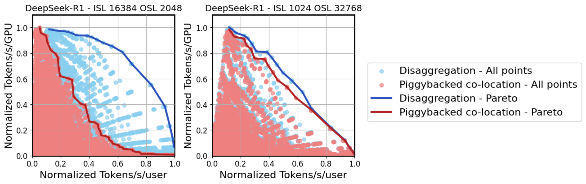
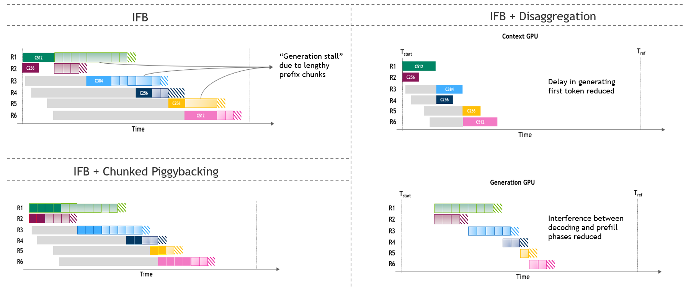
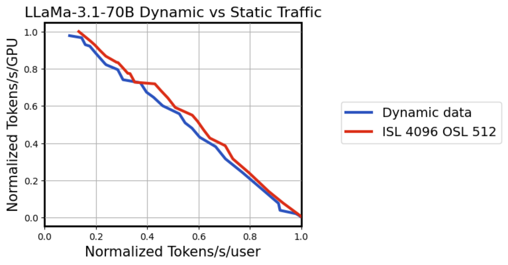
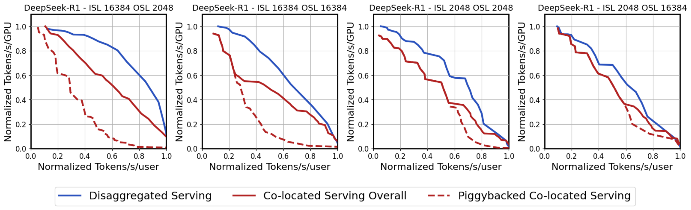
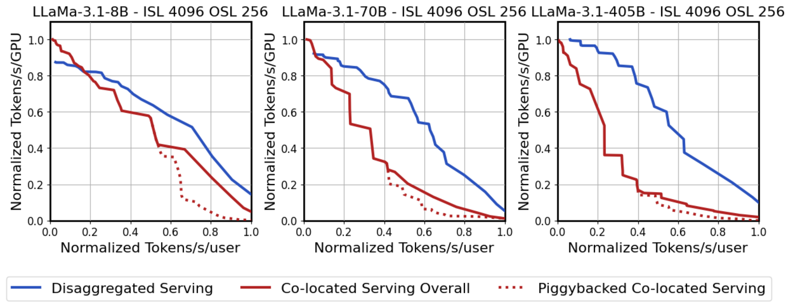
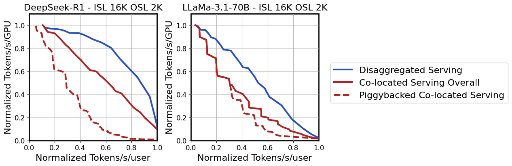
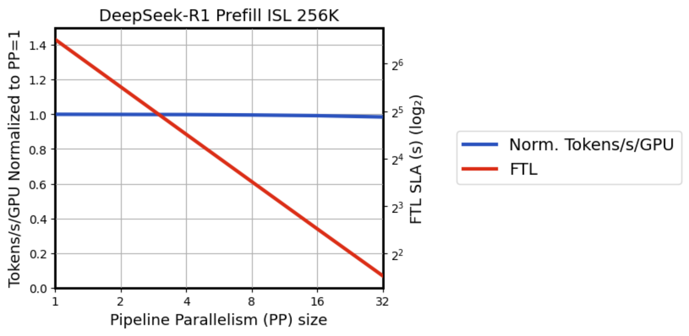
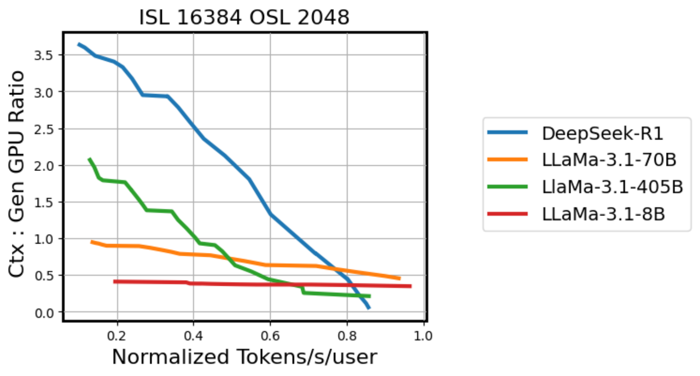
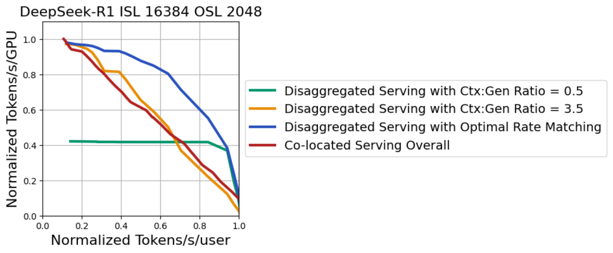
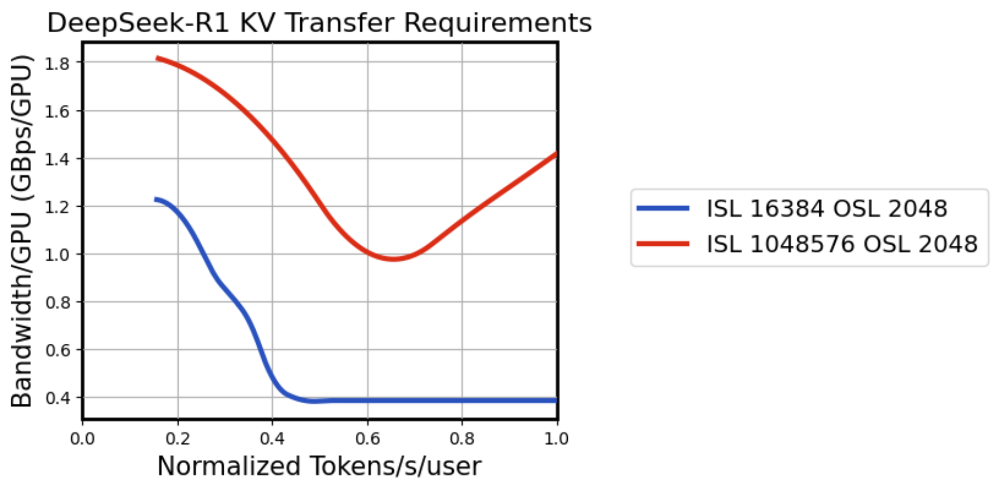

论文：Beyond the Buzz: A Pragmatic Take on Inference Disaggregation
作者：Tiyasa Mitra, Ritika Borkar, Nidhi Bhatia, Ramon Matas, Shivam Raj, Dheevatsa Mudigere, Ritchie Zhao, Maximilian Golub, Arpan Dutta, Sailaja Madduri, Dharmesh Jani, Brian Pharris, Bita Darvish Rouhani；NVIDIA Corporation
发表：arXiv:2506.05508v1，2025-06-05 提交（TeX 源码 2025-06-06 打包，NeurIPS 2025 模板）
链接：https://arxiv.org/abs/2506.05508
代码：未公开（使用专有 GPU 性能模拟器）
一个团队在决定推理集群要不要上 PD 分离——prefill 与 decode 拆到不同实例。社区热度很高（vLLM、TensorRT-LLM、Mooncake、P/D-Serve 等都在推），但大规模实际部署仍少；没人说得清"什么条件下值得分、分了之后要配什么"。NVIDIA 的这篇论文直指这个问题：用专有 GPU 性能模拟器对分离式推理的设计空间做首次系统研究，跨工作负载与硬件配置评估数十万设计点，给出"何时分离有利、需什么配套机制"的定量结论。本文页面讲述论文做了什么、关键机制是什么、结论的边界在哪。本文讨论的"分离"是论文语境下 PD 分离（即 prefill 与 decode 拆到不同实例）的简称，与它对应的"合设"指两者仍在同一实例（co-located），是论文的对照基线。
本文的学习目标包括：说明论文用什么方法研究分离、为什么可信与边界；解释什么条件下分离收益最大（流量、模型、架构）；说明动态 rate matching 为什么关键；推导 KV cache 传输的带宽需求、现有网络是否够用；给出部署者最可操作的结论清单与适用边界。前置概念：prefill/decode 两阶段、KV cache、TTFT/TPOT、PD 合设/分离动机见 MoE Serving；张量并行（TP）/ 流水线并行（PP）/ 组合记号见 模型并行；chunked prefill 与 piggybacking（含 MLA 重复投影开销机制）见 Chunked Prefill；MLA / GQA 见 MLA、MQA/GQA；NVLink 域与机内/跨机互联分层见 GPU 通信。
| 术语 | 含义 |
|---|---|
| FTL（First Token Latency） | prefill 完成并产出首 token 的延迟 |
| TTL（Token-to-Token Latency） | 生成相邻两个 token 的延迟；交互性 TPS = 1/TTL |
| ISL / OSL | 输入 / 输出序列长度 |
| 设计点（design point） | 模拟空间中的一个配置组合（切分 + 批大小 + 比例等） |
| rate matching | 确定 prefill:decode 实例（GPU）比例使两阶段吞吐平衡 |
| 弹性伸缩（elastic scaling） | 随需求变化动态调整两池规模 |
这篇论文用什么方法研究分离，为什么可信、边界在哪？
方法为专有 GPU 性能模拟器：输入模型架构/流量模式/GPU 配置，输出各批大小与并行策略下的延迟与吞吐；构建跨组合的 Pareto 前沿。数十万设计点、归一化呈现以传达趋势而非具体性能声明。关键假设：数据中心有足够 GPU 与请求使部署满载；KV cache 逐层即时传输并与计算重叠；FTL>10s 的设计点被排除。P50 ISL/OSL 近似在附录 C 已验证。结论边界 = 模拟器性质、归一化数字、Blackwell + FP4 语境、常数流量近似。完整论证见第 1 章。
什么条件下 PD 分离收益最大，为什么？
三个维度：①流量——prefill-heavy（ISL>>OSL，如 (16k/2k)）收益最大，generation-heavy 收益有限；机制是映射若优先解码速度会显著牺牲 prefill 吞吐，分离解除两阶段映射的耦合。②模型大小——更大模型（Llama 8B<70B<405B）收益递增；机制是更大模型映射更多 GPU、并行策略组合更丰富，两阶段独立选映射的优势放大。③架构——MLA（DeepSeek-R1）在 piggybacked co-located 下因每块重算 down/up 投影有额外开销，可临时缓存上投影 KV 缓解，GQA（LLaMa-70B）无此问题。完整论证见第 2 章。
分离系统必须配什么机制才能拿到 Pareto 最优？rate matching 是什么、为什么必须动态？
两维度优化=模型切分（prefill/decode 各自独立选映射）+ 伸缩/rate matching（两池 GPU 数比例）。rate matching 算法分两步：先选满足 FTL 的最高吞吐 prefill 配置，再对每个 decode 配置求近似整数比 $\alpha$ = prefill 吞吐/decode 请求吞吐，分配 GPU 数。最优 ctx:gen GPU 比例随模型与延迟目标大幅变化（DeepSeek-R1 从约 3.6 到约 0.05，跨度极大）；固定比例在偏离其适用区间时显著退化（3.5 在最宽松延迟下最优但收紧时退化，0.5 利于紧延迟但宽松下卡在低吞吐）。小规模 GPU 部署因资源受限，预期有类似效应。完整论证见第 3 章。
KV cache 传输要多大带宽，现有数据中心网络够不够？
逐层产 KV、与 prefill 计算重叠——egress 公式 $BW_{egress} = \frac{N_{layers} \cdot BS_{prefill} \cdot ISL \cdot d_{head} \cdot N_{kv\_heads} \cdot bytes_{element}}{FTL \cdot NumGPU_{prefill}}$；decode 侧在 TTL$\times$OSL 时间内收完——ingress 公式 $BW_{ingress} = \frac{N_{layers} \cdot BS_{decode} \cdot ISL \cdot d_{head} \cdot N_{kv\_heads} \cdot bytes_{element}}{TTL \cdot OSL \cdot NumGPU_{decode}}$。趋势：egress 随 ISL 增大而降低（FTL 超线性 vs KV 线性）；ingress 与 ISL 无关（两线性抵消）但随 OSL 增大而降低；TTL 收紧 → 更多 decode GPU → 每卡 ingress 需求降低。更大模型（MLA）egress 反而可能更小。DeepSeek-R1 模拟显示约 0.4–1.8 GBps/GPU，远低于现代 NVLink。完整论证见第 4 章。
对部署者最可操作的结论清单是什么，哪些条件不成立时要小心？
清单：①流量/模型画像先行决定分与不分（prefill-heavy + 大模型 → 分；小模型/生成密集 → 谨慎）；②若分：动态 rate matching + 弹性伸缩是必需件不是可选项；③prefill 池优先 CPP（深 PP 压 FTL、保持吞吐）；④decode 池预留 TP 升级空间（紧 TTL 下用更激进的高 TP）；⑤NVLink 域越大越好（更宽 EP/TP 的自由度）；⑥带宽规划不必焦虑（现有供给内）；⑦co-located 用户：MLA 注意 chunking 开销、宽松延迟 + 生成密集时 chunking 最有利。边界：模拟器性质、归一化数字、Blackwell + FP4 语境、P50 近似、未覆盖 KV 复用/投机解码。完整论证见第 5 章。
任何对"分离"的研究都要先回答一个问题：在多大的设计空间里、以什么粒度观察。论文给出一个极宽的空间和极细的粒度。论文用专有高保真 GPU 性能模拟器作为主要研究工具——输入模型架构（DeepSeek-R1、LLaMa-3.1-8B/70B/405B 等）、流量模式（ISL/OSL）、GPU 配置（Blackwell 系统），输出各批大小与并行策略下的延迟与吞吐，再据此构造吞吐-交互性 Pareto 前沿[C5]。研究覆盖的并行策略包括张量并行（TP）、专家并行（EP）、流水线并行（PP）、分块流水线并行（CPP），以及组合策略 TEP（Tensor Parallel Attention + EP FFNs）[C5]，见 模型并行页。整个空间被评估为"数十万设计点"（hundreds of thousands）[C1, N9]。
关键边界是模拟器性质——它不是真实集群实测。论文明确了几条假设与排除：模拟假设数据中心有足够 GPU 与到达请求使 rate-matched 部署满载，且 prefill 池每层产生的 KV cache 在可用时立即传给生成池并与后续层计算重叠[C8]；FTL>10s（宽松但实用的上限）的设计点被排除[C7, N3]；分析聚焦现代 Blackwell 系统与 FP4 精度[C6]。所有图均归一化呈现，目的是传达趋势而非具体性能声明[C9]。这些边界共同把"结论的迁移范围"标在了模拟研究这一格内：纸面数字不能直接当某集群的预期吞吐，需要用自己的工作负载与硬件再验证。
为什么选择模拟而非实测？论文给出的理由隐含在研究目标的两个特征中：①设计空间维度极多（模型 $\times$ 切分 $\times$ 批 $\times$ 比例 $\times$ 流量 $\times$ 硬件），真实集群只能测其中一小撮，无法支撑系统性的"何时分离有利"判断；②分离的核心效益对比对象（合设部署）本身需要同等细粒度的对照—— piggybacked co-located 与非 piggybacked co-located 同时评估[C16]，模拟器才能一致地做这件事。模拟研究的代价是失去了真实系统的小细节（如碎片、调度异常），收益是第一次能在统一方法下看到整个 Pareto 前沿的形状。
图 1 给出了论文的标志性结果——DeepSeek-R1 在两种流量设置下的吞吐-交互性 Pareto：左侧 prefill-heavy（ISL 16k OSL 2k）分离显著优于 piggybacked co-located，右侧 generation-heavy（ISL 1k OSL 32k）两者差距小得多。

图 2 直观展示两种 serving 模式的时间分布差异——co-located 下不同请求的 prefill 与 decode 迭代混在同一个时间轴上，disaggregated 下两阶段被拆到不同的实例。

设计空间可从两个维度去组织：①模型切分（prefill 与 decode 各自独立选择 TP/EP/PP/CPP）；②伸缩/rate matching（两池 GPU 数比例）。第 3 章展开第二维。附录 C（源文件名 appendixD.tex）支撑模拟方法的可信度：图 14 比较了"直接模拟动态流量"与"用 P50 ISL/OSL 的最近 2 的幂近似"两个 Pareto 前沿，两者非常接近，表明常数流量近似在论文所测的真实分布下是合理的[C19]。

为什么论文用模拟器而不是真实集群实验？这种选择的代价与收益是什么？
论文的研究目标是"什么时候分离有利、需要什么配套机制"——这要求在模型$\times$切分$\times$批$\times$比例$\times$流量$\times$硬件的多维空间上系统扫描、构造 Pareto 前沿。真实集群能测的配置数量受时间与硬件成本限制，往往只能选少数代表性点，无法呈现"前沿"形状；模拟器虽不能重现真实系统的全部细节（如显存碎片、调度异常），但能在统一方法下同时评估合设（含 piggybacked 与非 piggybacked 基线）与分离的所有相关设计点，构造出可比的 Pareto 前沿。代价：失去真实数字的迁移性，论文图全部归一化[C9]，不能直接当某集群的预期吞吐。收益：第一次能在统一方法下看到整个 Pareto 前沿的形状与配套机制的影响。
论文的模拟做了哪些关键假设、哪些是排除了的？
三个关键假设：①数据中心有足够 GPU 与请求使 rate-matched 部署满载；②prefill 池每层产生的 KV cache 在可用时立即传给生成池并与后续层计算重叠（这是带宽公式的推导基础，也是 egress 可与计算重叠的物理前提）；③常数 ISL/OSL 的 P50 近似（已用附录 C 验证）[C8, C19]。排除项：FTL>10s 的设计点不进入搜索空间[C7, N3]。硬件语境：现代 Blackwell 系统 + FP4 精度[C6]。这三组假设加一组排除，共同标定了论文结论可被信任的范围——在论文设定的数据中心满载、KV 传输无滞后、严格 FTL 内、Blackwell+FP4 的前提下结论成立；外推到其他硬件（如 H100）或偏离假设的工作负载时需要重新验证。
论文的第一个核心结论：分离不是普适最优——它对 prefill-heavy 流量与更大模型收益最大。三组因素决定收益：流量模式（ISL/OSL 比例）、模型大小、注意力架构。本章按这三个维度展开。
图 8 用 DeepSeek-R1 在四种 (ISL, OSL) 组合下比较分离与合设：(16k, 2k) 强 prefill-heavy、(16k, 16k) 平衡偏 prefill、(2k, 2k) 平衡偏 decode、(2k, 16k) generation-heavy[C18]。前两张图分离蓝线明显高于合设红线，后两张差距收窄——验证"prefill-heavy 收益最大"的第一结论。

机制是分离解除两阶段映射的耦合。若合设实例的并行策略要兼顾 prefill 与 decode 的资源需求：prefill 是 compute-bound（处理全部输入 token 的大矩阵乘），decode 是 memory-bound（小批量的权重读取），两者对批大小、并行度的最优区间不同（基于 prefill/decode 两阶段负载结构的推断[C10, 推断]；论文 §2 仅说 "different bottlenecks" 未明文分类）。如果合设实例的映射偏向 decode（满足 TTL SLA），prefill 处理的吞吐就被牺牲[C18]。在 prefill-heavy 流量下，被牺牲的 prefill 吞吐是系统的主要矛盾——prefill 池独立后能选自己的最优映射、消除这一牺牲。generation-heavy 流量下 prefill 占比小，解除耦合的边际收益也小。同一图也说明 piggybacking 在 generation-heavy 流量下最有利（红虚线与红实线更接近）：因为 prefill 不重时 piggybacking 不会显著拖慢 decode。
流量敏感的边界：模拟用常数 ISL/OSL（P50 的最近 2 的幂近似）[C19]，极端多峰分布未在论文验证范围内。在论文所测的真实部署分布（数值脱敏）下 P50 近似足够[C19, G9]。
图 7 把 LLaMa-3.1 系列（8B、70B、405B）放在 ISL 4k OSL 256（context-heavy 流量）下比较：8B 时分离蓝线与合设红实线差距小，70B 差距明显，405B 分离优势最大[C17]。

机制是"大模型有更丰富的并行策略组合"——更大模型映射到更多 GPU，每一阶段可选的 TP/EP/PP 组合更多；分离让两阶段可以分别选各自的最优组合，组合的丰富性转化为优势[C17]。小模型（如 8B）映射只用少量 GPU，组合空间本身小，分与不分都只能选相近的策略，差距自然小。论文在 introduction 把这条线总结为"大于约 10B 参数"是受益区间[C2, N1]，图 7 的视觉对比与之一致。
图 6 比较 DeepSeek-R1（MLA）与 LLaMa-3.1-70B（GQA）在 ISL 16k OSL 2k 下的分离与合设。两个模型的分离蓝线都高于合设红实线，但关键差异在 piggybacked co-located（红虚线）：DeepSeek-R1 的 piggybacked 远低于合设 overall，LLaMa-70B 的 piggybacked 与合设 overall 较接近[C16]。

机制（详见 Chunked Prefill 与 MLA 页）：MLA 把 KV 压缩到低维潜向量、计算注意力时再上投影重建 K/V。chunked prefill 把长 prefill 切成块，每块的 attention 要重新经过一次 down+up 投影重建 KV——同样的 down/up 计算被每个块重复做一次[C16]。GQA 没有 down/up 投影这一步，每块的 attention 只用本块自己的 K/V，没有重复计算开销。这条机制直接让论文的 co-located 基线 Pareto 同时含 piggybacked 与非 piggybacked 配置（不能只用其中一个代表合设）[C16]。缓解方法：临时缓存早前块的上投影 KV，跨块复用——属于实现细节，不改变结论。
对部署者的含义：MLA 模型（DeepSeek 系列）的合设部署若用 piggybacking，要单独评估其 chunking 开销；在某些工作负载下 piggybacking 的收益会被重复计算的开销吃掉，反而不如非 piggybacked 的合设。
为什么 prefill-heavy 流量的分离收益最大？
合设部署要同时处理 prefill（compute-bound、批大、算力敏感）与 decode（memory-bound、批小、权重复用敏感）两阶段，单一映射无法同时最优[C10, C18]。如果映射偏 decode 速度以满足 TTL SLA，prefill 吞吐被牺牲；如果映射偏 prefill 吞吐，decode 速度恶化。prefill-heavy 流量下被牺牲的 prefill 吞吐是系统的主要瓶颈——分离让 prefill 池独立选自己的映射、消除这一牺牲。generation-heavy 流量下 prefill 占比小，解除耦合的边际收益也小。同一图也支持 piggybacking 在 generation-heavy 下最有前景的镜像结论[C18]。这是为什么"是否分离"的决策需要先做流量画像、不能直接套用。
模型大小对分离收益的影响有什么机制？
大模型（如 LLaMa-3.1-405B）映射到更多 GPU，每一阶段可选的 TP/EP/PP 组合更丰富[C17]。分离让两阶段分别选各自最优组合，组合的丰富性直接转化为优势。小模型（如 LLaMa-3.1-8B）映射只用少量 GPU，组合空间小，分与不分都只能选相近的策略，差距小。论文给出经验阈值"大于约 10B 参数"[C2, N1]，但这不是硬边界——同一模型在更小或更大 GPU 池上分隔点可能移动。机制是"并行策略组合的丰富性"而非"参数绝对值"，这是判断的物理依据。
MLA 与 GQA 在 piggybacked 下的表现为什么不同？
MLA 把 KV 压缩到低维潜向量，attention 时上投影重建 K/V。chunked prefill 切块后，每块都要重新经过 down+up 投影重建 KV——同样的 down/up 计算在每个块上被重复做[C16]。GQA 没有 down/up 投影这一步（K/V 直接以完整维度存储），每块的 attention 只用本块自己的 K/V，无重复计算开销。论文因此把 piggybacked 与非 piggybacked 的合设配置都纳入基线 Pareto——只用其中一个会显著偏移合设的参考基准，特别是对 MLA 模型。部署含义：MLA 模型评估合设部署时必须区分 piggybacked 与非 piggybacked 两种基线，否则结论会高估或低估分离收益。
分离解决了"是否分"的问题；分完之后怎么配才是工程上的真正难题。论文的两维度设计空间——模型切分（两阶段各自选映射）+ 伸缩/rate matching（两池 GPU 数比例）——给出了答案的骨架。本章展开第二维，因为它比模型切分更反直觉、更容易做错。
分离后 FTL 约束只作用于 prefill（context）池。为在混合长度序列下压低 FTL 同时维持高吞吐，论文发现 Chunked Pipeline Parallelism（CPP）尤其有效——预填层把输入切块（chunk）并用 pipeline 并行执行[C13]。图 5 是关键证据：DeepSeek-R1、ISL 256K、64 GPU（EP $\times$ PP = 64）的设置下，PP 维度从 1 增到 32，FTL 从约 90 秒（log2 $2^{6.5}$）降到约 4 秒（log2 $2^{2}$），而吞吐（按 PP=1 归一化）几乎保持在 1.0[C13, G3]。

CPP 的机制详见 Chunked Prefill 页第 5 章：把长 prefill 切成等计算量的块，每个块作为 micro-batch 进流水线，slot 时长均匀、气泡被压缩。论文把这条作为 prefill 池的最优策略直接使用：长序列上想要严 FTL 又不丢吞吐，CPP 是默认答案。
需要注意的边界：图 5 是 ISL 256K 极端长序列的设置，对常见 ISL（16k、4k）该结论仍成立但压低 FTL 的空间更小（因为单层 FTL 已经足够低）。
分离部署中 SLA 由 FTL（prefill 完成到首 token 的延迟；范围数百毫秒到数分钟[N2]）与 TTL（生成相邻两个 token 的延迟；数毫秒级[N2]）共同定义。TTL 约束只作用于 decode 池。沿 Pareto 前沿从低 TPS 端（宽松延迟）走到高 TPS 端（紧延迟），配置轨迹的规律是：批大小从高到低、张量并行度从低到高[C14]。具体例子：DeepSeek-R1、ISL 16k、OSL 2k 模拟下，专家并行在 NVLink 域内一致占优，注意力计算从高吞吐区的数据并行转向紧 TTL 下的张量并行，批大小在数百递减[C14]。LLaMa-3.1-70B 上 TP 沿 Pareto 从 2$\times$ 扩到 64$\times$，批大小同步递减[C14, N5]。
关键观察是分离的 decode 池可以比合设更激进地采用高 TP。合设下映射必须同时照顾 prefill，TP 不能放得太大（会拖累 prefill 性能）；分离的 decode 池只需要满足 TTL，可以单独追求 TP 极致[C15]。效果是分离在中延迟区（即 Pareto 的中段）取得更优性能——这是分离在中延迟区领先合设的机制来源。
rate matching 的目标：给定 prefill 与 decode 各自选好的最优配置，确定两池的 GPU 数比例，使两阶段吞吐平衡（prefill 处理的请求数 = decode 处理的请求数），且总 GPU 数最小。论文附录 B 给出两步算法（复述为伪代码）[C20]：
伪代码（输入与输出的核心步骤；完整代码见附录 B）
该算法给出的"最优 ctx:gen GPU 比例"随模型与目标延迟大幅变化。图 9 用 ISL 16k OSL 2k 的设置画四个模型：LLaMa-8B 几乎水平$\approx$0.4；LLaMa-70B 从约 0.95（低 TPS）缓慢降到约 0.45（高 TPS）；LLaMa-405B 从约 2.1 降到约 0.3；DeepSeek-R1 从约 3.6 降到约 0.05，跨度极大[C20, G6]。

这条曲线的物理含义：随延迟收紧（高 TPS 端），decode 池的每 GPU 吞吐上升（批小、TTL 紧），prefill 池的处理能力相对需要更少 GPU；比例随之下移。变化剧烈的原因是不同模型的 TP/EP 调整能力差异——DeepSeek-R1 的 EP 可调性高，所以比例跨度大。结论：通用分离系统必须内置动态 rate matching，不能预编译一个固定比例[C20]。
固定比例的退化如图 10。DeepSeek-R1、ISL 16k OSL 2k 下：比例 0.5 在低 tokens/s/user（宽松延迟）端被卡在约 0.4 的吞吐（无法满足低 TPS 区的请求量），但在高 TPS 端（紧延迟）相对较好；比例 3.5 在低 TPS 端接近 Optimal Rate Matching，但在高 TPS 端退化明显[C21, G7]。Optimal Rate Matching（动态调整比例）蓝线在全区间都最高——证明动态性不可省。

小规模 GPU 部署的边界：rate matching 搜索空间受可用 GPU 数限制（整数比必须能容纳），小规模时可能只能用某个固定比例或少量候选，论文预期有类似退化[C21]。该结论来自模拟，未给出小规模实测数字。
rate matching 算法的两步分别做什么？
第一步遍历候选 prefill 配置（含批大小、GPU 数、对应 FTL），挑满足 FTL cutoff 中吞吐（= 批/(FTL$\times$GPU)）最高的，作为 prefill 池的固定配置[C20, App.B]。第二步对每个候选 decode 配置（含 TTL），用整数求解器求近似整数比 $\alpha$ = prefill 吞吐/decode 请求吞吐，按 tolerance=0.03 取整为分数 num/den；分配 num $\times$ G_dec 个 prefill GPU 与 den $\times$ G_prefill 个 decode GPU；记录该配置下的系统总吞吐作为 Pareto 的一个候选点。第二步输出"两池 GPU 数比例 = $\alpha$"，最优比例随模型与延迟目标变化——这是动态 rate matching 不可省的物理基础。
为什么固定比例 3.5 在某些延迟下退化？
图 10 显示 3.5 在低 tokens/s/user 端接近 Optimal，但在高 tokens/s/user 端退化明显[C21, G7]。机制：低 TPS 端 decode 每 GPU 吞吐低，需要更多 decode GPU（或相对少 prefill GPU）来平衡；比例 3.5 意味着 prefill 多 decode 少，正好匹配。高 TPS 端 decode 每 GPU 吞吐高，比例应向 decode 多 prefill 少方向移动（小于 1）；比例 3.5 在此区间硬性给 prefill 太多 GPU，浪费在该端属于主导。比例 0.5 镜像：低 TPS 端硬性给 prefill 太少 GPU，被卡在 0.4；高 TPS 端相对匹配。Optimal Rate Matching 沿曲线动态调整，全区间最高[C21]。
分离让 prefill 与 decode 在不同实例上运行——KV cache 必须从 prefill 池传到 decode 池。这是分离的额外代价，也是部署时常被高估的瓶颈。本章给出带宽需求公式与各趋势，并对照论文的模拟结果回答"够不够"。
prefill 池逐层产生 KV cache，下一层的计算不依赖上一层的 KV 完整传完——这给"KV 边算边传"创造了空间。逐层产生的 KV 在该层计算完成后立即往 decode 池发，与 prefill 后面的层继续算的过程并行[C8]。这一重叠让 egress 带宽需求不必支撑"完整 prefill 完成才发 KV"的瞬时尖峰——只要每层产生 KV 的速率不超出每 GPU 的出口带宽即可。论文的 egress 公式是[C8, F1]
$$BW_{egress} = \frac{N_{layers} \cdot BS_{prefill} \cdot ISL \cdot d_{head} \cdot N_{kv\_heads} \cdot bytes_{element}}{FTL \cdot NumGPU_{prefill}}.$$
公式的解读：分子是"prefill 期间产生的 KV 总量"（层数 $\times$ 批 $\times$ 序列长 $\times$ 头维 $\times$ KV 头数 $\times$ 字节数）；分母是"可用于传输的时间"（FTL）与"分散出口的 GPU 数"的乘积。直觉：KV 总产出除以（时间 $\times$ 卡数）= 每卡每单位时间的字节率 = 带宽[C8, F1]。
两个边界条件。其一，公式假设 KV 逐层即时传输与计算重叠（$C8$）——若实际系统有传输滞后，所需带宽按滞后比例增加。其二，当 TP 域超过 KV 头数时 KV 复制而非切分（如 TP=8 但 KV 头数=1，KV 在 8 个 TP rank 上复制 8 份），计算每卡带宽时只计入真正切分 KV 的 GPU（$NumGPU_{prefill}$）[C6 补充 F6]。计算示例：DeepSeek-R1、$N_{layers}=61$、$BS_{prefill}=32$、$ISL=16384$、$d_{head}=128$、$N_{kv\_heads}=1$（MLA）、$bytes_{element}=1$（FP8）、$FTL=2s$、$NumGPU_{prefill}=8$——代入得 $BW_{egress} \approx 61 \times 32 \times 16384 \times 128 \times 1 \times 1 / (2 \times 8) \approx 0.256$ GB/s/卡（构造示例，参数取自 DeepSeek-R1 公开架构，数字仅为说明量级）。
decode 池收 KV 的时间窗由 TTL 与 OSL 共同决定。生成一个 token 用一个 TTL 长度，整个请求生成 OSL 个 token——总时间窗 $\approx$ TTL $\times$ OSL。在该时间窗内，decode 池需要收完该请求的完整 KV 缓存[C8, F2]。论文的 ingress 公式是[C8, F2]
$$BW_{ingress} = \frac{N_{layers} \cdot BS_{decode} \cdot ISL \cdot d_{head} \cdot N_{kv\_heads} \cdot bytes_{element}}{TTL \cdot OSL \cdot NumGPU_{decode}}.$$
直觉：分子仍是 KV 总量，分母是"生成完整 OSL 长度所用的总时间"与"分散入口的 GPU 数"——每卡每秒收到的字节率。F6 关于 KV 复制的边界同样适用。
两个公式看似相似，但分母的差异让它们对各变量有不同响应，论文据此给出四条趋势[C8, F3-F5]：
模型规模也有间接影响：FTL 随活跃参数数线性增长，但 KV 大小不随参数量同比例增长[F5]；带优化注意力（MLA）的更大模型 egress 需求可能低于注意力架构低效的小模型[F5, 推断]。MLA 在合设下有额外开销（§2.3），但在带宽维度反而可能更有利（KV 头数少，egress 量低）——两条机制方向相反。
论文的模拟结果（图 12）：DeepSeek-R1、(ISL 16k, OSL 2k) 与 (ISL 1M, OSL 2k) 两组序列长度组合、多档 TTL 下，egress/ingress 带宽需求约在 0.4–1.8 GB/s/GPU 之间[C8, N8, G8]。具体观察：

带宽量级远低于现代数据中心互联能力——NVLink 单向带宽约 50–100 GB/s/卡，IB/RoCE 跨机约 10–25 GB/s/卡，论文模拟所需带宽远低于跨机网络供给、远低于机内 NVLink[C8]。论文的结论："Our analysis indicates that existing provisioned datacenter bandwidth is sufficient to support KV cache transfer without becoming a bottleneck"——带宽不是分离的根本瓶颈[C8]。
（这一组带宽数字为从图中读出，原文以归一化形式呈现不附绝对值；模型参数为构造示例所用 DeepSeek-R1 公开架构，非论文直接给出的数字。）
为什么 egress 公式分母是 FTL $\times$ NumGPU 而不是单纯 FTL？
分母同时乘 FTL 与 NumGPU_{prefill}：FTL 是所有 prefill GPU 共享的总时间窗，NumGPU_{prefill} 是"分摊"出口带宽的 GPU 数。两者相乘 = 可用于传输的总时间-卡数资源，再除以 KV 总量得到每卡每单位时间字节率[C8, F1]。直觉：每张卡都分担总出口流量，总资源（时间 $\times$ 卡数）越大、每卡压力越小。相应地 $NumGPU_{prefill}$ 只计入"唯一切分 KV 的 GPU"——KV 复制的 rank 不承担额外传输（接收方收到的是同一份）。
egress 随 ISL 增大而降低，但 ingress 与 ISL 无关，机制差别是什么？
egress 端 FTL 由 prefill 注意力决定，序列长度平方的成本让 FTL 随 ISL 超线性增长（I/O 之外的瓶颈），而 KV 大小只随 ISL 线性增长（KV cache 是激活值张量、每 token 增量固定），分子分母的不同增长速率让 egress 下降[C8, F3]。ingress 端 KV 大小与 decode 算力都随 ISL 线性增长（decode 算 attention 时对 ISL 长度内的所有 K/V 做 attention，序列越长 compute 与 KV 都线性增长），分子分母的 ISL 因子抵消——ingress 与 ISL 无关[C8, F4]。两公式的相似形式掩盖了它们对各变量的不同响应。
论文的带宽模拟为什么得出"现有数据中心带宽足够"的结论？
DeepSeek-R1 在 (16k/2k) 与 (1M/2k) 两组序列长度组合、多档 TTL 下，egress/ingress 带宽需求落在 0.4–1.8 GB/s/GPU 区间（图 G8）[C8, N8, G8]。现代 NVLink 单向带宽约 50–100 GB/s/卡，跨机 IB/RoCE 约 10–25 GB/s/卡——模拟所需带宽远低于跨机网络供给、远低于机内 NVLink[C8]。边界：模拟假设 KV 逐层即时传输与计算重叠（$C8$）；若实际系统传输滞后或调度抖动大，所需带宽按比例增加；论文未给出"传输滞后 X% 时带宽需求上升 Y%"的具体量化。
前四章展开了论文的方法、敏感性、配套机制与带宽代价。本章把它们压缩成部署者直接可用的清单，同时明确论文的方法与结论边界——清楚哪些事它没回答、哪些数字不能直接迁移。
以下清单综合自第 1–4 章的机制分析与论文结论[C24]。每条对应一个常见决策点：
这些结论与 MoE Serving 页讲的"PD 分离基础机制"互补：MoE Serving 讲分离是什么、为什么可以工作；本页讲分离在什么条件下值得、怎么配、有什么代价。两者一起覆盖决策的两端。
论文的"首次系统研究"价值来自方法的一致性，但也受方法本身的限制。读者把论文结论迁移到自己的系统时需要明确以下边界[C9, C19, C23, C25]：
开源实现的现状：相关工作一节明确说开源实现（vLLM、TensorRT-LLM、Mooncake、P/D-Serve）"fall short of providing concrete guidance on when and how disaggregation is beneficial"[C23]，先前研究"largely focused on small-scale testbeds and peak throughput scenarios, without examining the full throughput–interactivity Pareto frontier"[C23]——论文填补的正是这个缺口，是设计空间层面的指导而非实现层面的可部署代码。
对"是否上 PD 分离"的决策，论文给的最直接结论是什么？
论文的核心结论之一是分离不是普适最优——它对 prefill-heavy 流量（ISL>>OSL）与更大模型（>10B）收益最大[C2, C24]。直接迁移到决策语境：先用流量画像与模型大小判断，若工作负载属于 prefill-heavy（典型如文档分析、长上下文推理）且模型达到 70B 以上规模，分离值得上；其他场景优先评估合设部署的优化空间（chunked prefill、IFB、并行策略调整）而非直接上分离。论文 §8 明确强调"we also highlight scenarios where disaggregation offers limited benefit — such as serving small-scale models or generation-heavy traffic"[C24]——这与"上分离"的决策一起给出两端判断。
论文的方法有什么关键限制，结论能直接外推到我的系统吗？
四个直接限制：①模拟器性质（无实测、内部建模未公开）[C5]；②归一化数字（无绝对值）[C9]；③硬件语境是 Blackwell + FP4[C6]；④流量用常数 ISL/OSL 的 P50 近似[C19]。结论能外推什么：①趋势性论断（prefill-heavy 收益大、动态 rate matching 关键、带宽足够）——这些是机制性结论，与具体硬件相关性较低，可以外推到相似的分离式部署；②配置性数字（最优 ctx:gen 比例、具体 TP 维度）——这些强依赖模拟器的硬件与流量假设，外推到其他硬件/工作负载时数字可能不同。结论不能外推什么：①绝对吞吐数字（归一化无意义）；②FTL>10s 场景（不在搜索空间）[C7]；③超大规模或极端多峰分布（未在论文验证）。要拿绝对数字需要用自己的配置实测或在更细的模拟上重跑。
图通过 `python3 .dojo/scripts/img_to_b64.py` 转为 base64 内联；原图为论文 TeX 源码包中的矢量图，以 pymupdf 3$\times$ 缩放渲染为 PNG 后转 base64。页面正文引用的"图 X"与论文原始 Figure 编号（Fig.1, Fig.2, Fig.5–Fig.10, Fig.12, Fig.14）一致；论文 Fig.3（rate matching 概览）/ Fig.4（chunked prefill 机制图）/ Fig.11（NVLink 域敏感性）/ Fig.13（ISL/OSL 分布 CDF）未在正文使用：前两者机制图分别由 MoE Serving 与 Chunked Prefill 页承载；Fig.11/13 与本文核心结论弱相关。